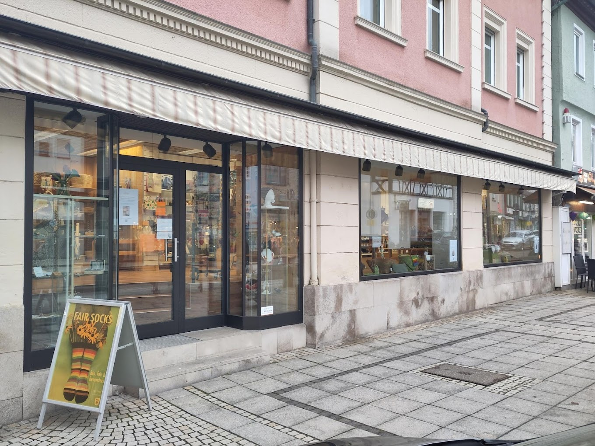
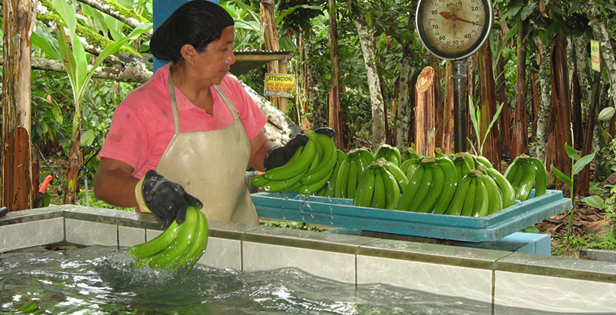
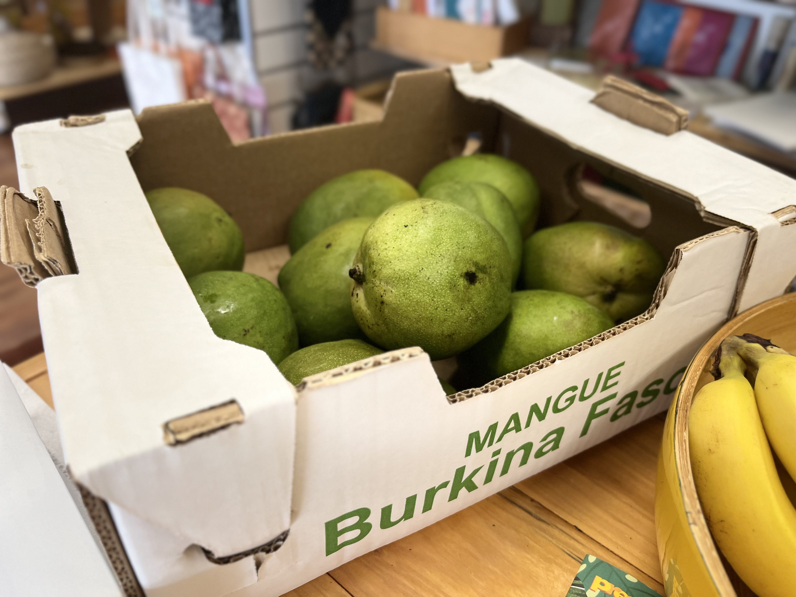
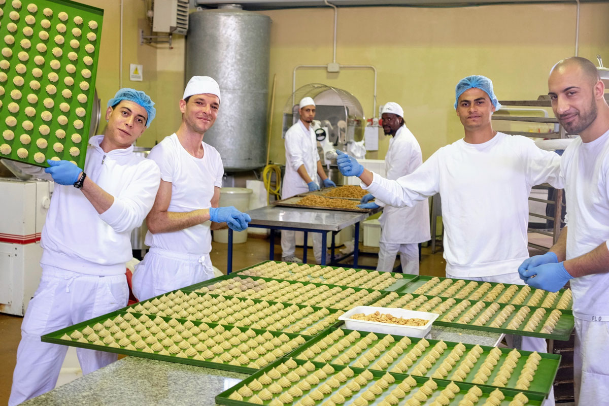
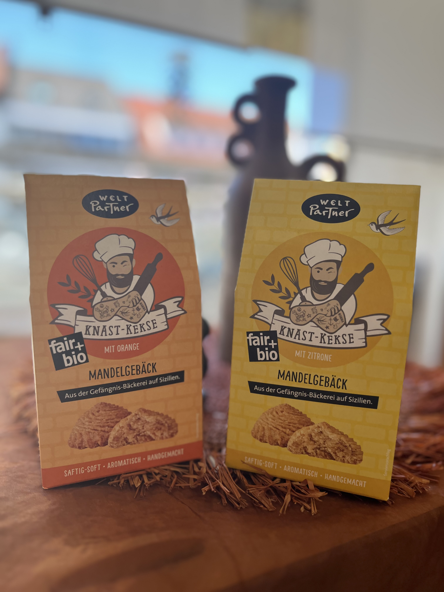
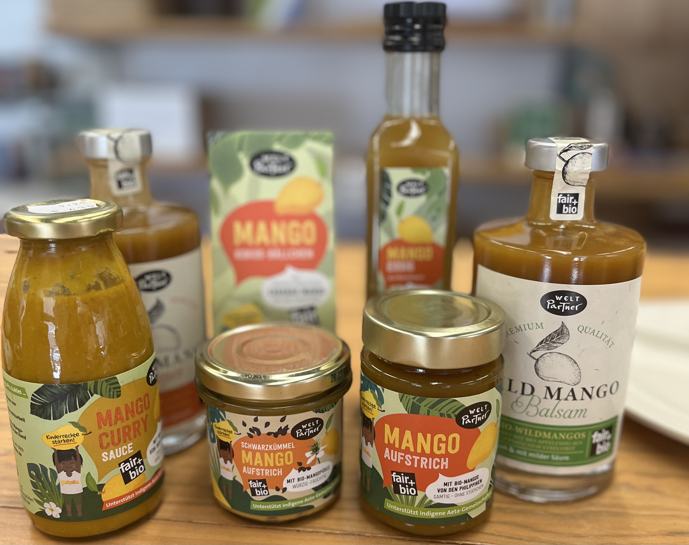
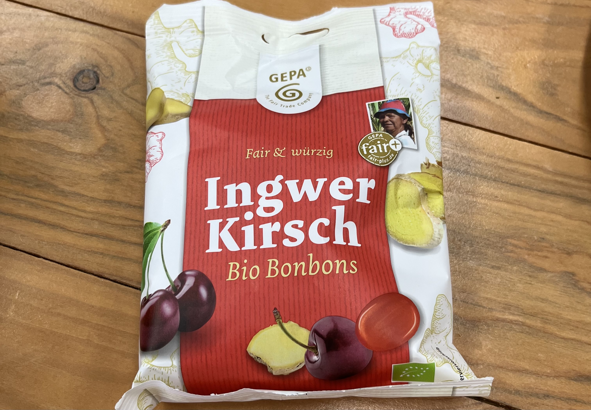
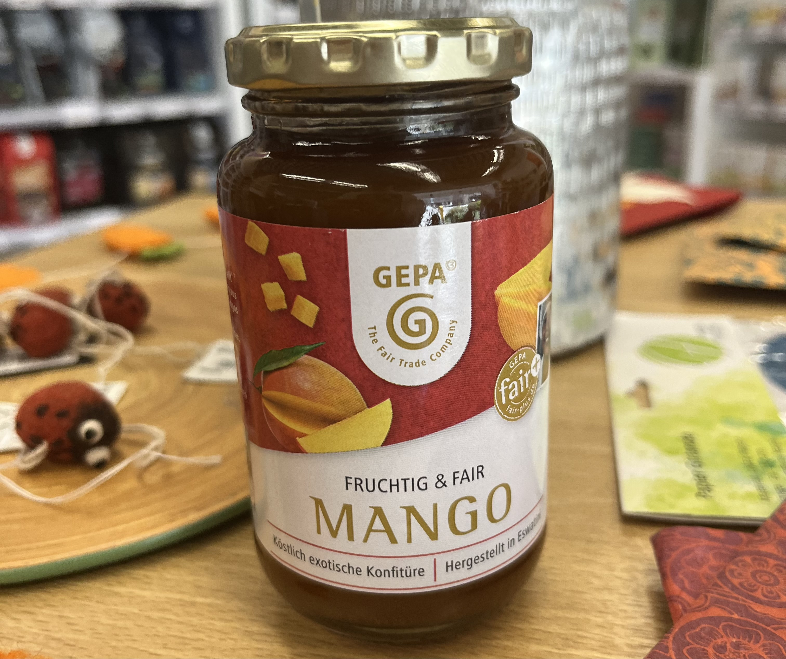

Willkommen beim Weltladentag 2026 im Weltladen Künzelsau
Klicke auf ein Land und erfahre mehr über die Herkunft verschiedener Früchte.
👉 Wische nach links/rechts, um die Karte zu bewegen

Entdecke, woher die fairen Früchte wirklich kommen

Klicke auf ein Land und erfahre mehr über die Herkunft verschiedener Früchte.
👉 Wische nach links/rechts, um die Karte zu bewegen

Hier im Weltladen in Künzelsau kommen viele der Früchte und Fruchtprodukte aus aller Welt zusammen. Wir achten dabei besonders darauf, dass sie unter fairen Bedingungen angebaut und gehandelt wurden.
Mit deinem Einkauf unterstützt du Produzentinnen und Produzenten in Ländern wie Ecuador, Uganda oder Indonesien und trägst dazu bei, dass sie gerechte Preise für ihre Arbeit erhalten.
Gerade zum Weltladentag 2026 mit dem Motto „Fair fruchtet“ wird deutlich: Fairer Handel wirkt. Er sorgt nicht nur für bessere Lebensbedingungen, sondern bringt auch hochwertige und nachhaltige Produkte zu uns.
So kannst du hier vor Ort ganz bewusst genießen – und gleichzeitig etwas Gutes bewirken.

In Ecuador wachsen viele der Bananen, die auch im Weltladen in Künzelsau verkauft werden. Oft stammen sie von kleinen Familienbetrieben, die ohne fairen Handel nur sehr geringe Preise für ihre Arbeit bekommen würden.
Durch den fairen Handel erhalten die Produzentinnen und Produzenten gerechtere Bezahlung und bessere Arbeitsbedingungen. So wird aus einer einfachen Banane mehr als nur ein Produkt – nämlich eine echte Unterstützung für die Menschen vor Ort.
Gerade zum Weltladentag 2026 mit dem Motto „Fair fruchtet“ wird deutlich: Jede Entscheidung im Laden hat Wirkung – von Ecuador bis hier nach Künzelsau.

Die Mangos im Weltladen in Künzelsau stammen aus Burkina Faso. Sie werden über den Freundeskreis Bareka bezogen, der den direkten Handel mit den Produzentinnen und Produzenten ermöglicht.
Durch diese Zusammenarbeit erhalten die Menschen vor Ort faire Preise für ihre Arbeit und bessere Perspektiven für ihre Zukunft. So wird aus einer Mango mehr als nur ein Produkt – sie steht für eine direkte Verbindung zwischen Burkina Faso und uns hier in Deutschland.

Im Weltladen in Künzelsau gibt es die „Knastkekse“ mit Orange und Zitrone. Sie werden von der Sozialkooperative Arcolaio in Syrakus auf Sizilien hergestellt und über Weltpartner bezogen.
Dort arbeiten Menschen im Gefängnis an hochwertigen Backwaren und erhalten dadurch die Möglichkeit, neue Perspektiven für ihr Leben nach der Haft zu entwickeln.
Für die Kekse werden unter anderem italienische Bio-Zutaten wie Orangen und Zitronen sowie fair gehandelter Zucker verwendet. So zeigt das Projekt, dass fairer Handel auch innerhalb Europas soziale Wirkung haben kann.


Die Mangos aus den Philippinen sind Teil eines Fair-Trade-Projekts, das kleinbäuerlichen Familien eine stabile Lebensgrundlage ermöglicht. Durch faire Preise können sie ihre Felder sichern und der Armut entkommen, die besonders Kinder stark betrifft.
Ein Teil der Fair-Trade-Erlöse unterstützt außerdem die Organisation Preda, die sich auf den Philippinen für Kinderrechte einsetzt und missbrauchte sowie benachteiligte Kinder betreut.
Aus diesen Mangos entstehen verschiedene Produkte wie Mangoessig, Mangoaufstrich und viele weitere Spezialitäten, die zeigen, wie vielseitig fair gehandelte Früchte genutzt werden können.
So stehen die Mangos nicht nur für fruchtigen Geschmack, sondern auch für Schutz, Chancen und mehr Gerechtigkeit vor Ort.

Im Weltladen in Künzelsau werden Ingwer-Kirsch-Bonbons angeboten, deren Süße aus Bio-Rohrohrzucker aus Paraguay stammt.
Der Zucker kommt von Kleinbauern, die sich in der Kooperative Manduvirá zusammengeschlossen haben. Dort bauen sie neben Obst und Gemüse vor allem Zuckerrohr an und arbeiten gemeinsam an besseren Lebensbedingungen.
Durch den fairen Handel erhalten die Produzentinnen und Produzenten zusätzliche Prämien, die unter anderem den Bau einer eigenen Zuckermühle und neue Arbeitsplätze ermöglicht haben.

Im Weltladen in Künzelsau gibt es Mango-Konfitüre aus Eswatini, die unter fairen Bedingungen hergestellt und verarbeitet wird. Produziert wird sie von Eswatini Kitchen, einem Partnerbetrieb der GEPA.
Dort erhalten vor allem alleinerziehende Frauen die Möglichkeit, ein eigenes Einkommen aufzubauen und wirtschaftlich unabhängig zu werden. Die Produktion findet direkt im Ursprungsland statt, sodass möglichst viel Wertschöpfung vor Ort bleibt.
Zusätzlich unterstützen die Produzentinnen soziale Projekte wie eine Suppenküche für mehrere Waisenhäuser. So verbindet die Konfitüre wirtschaftliche Perspektiven mit sozialem Engagement.